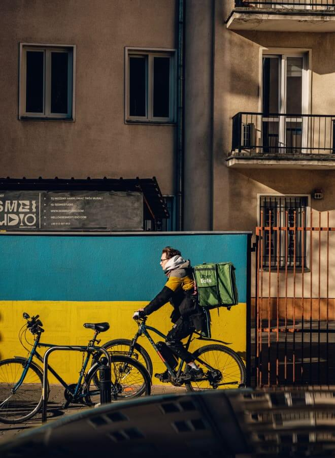
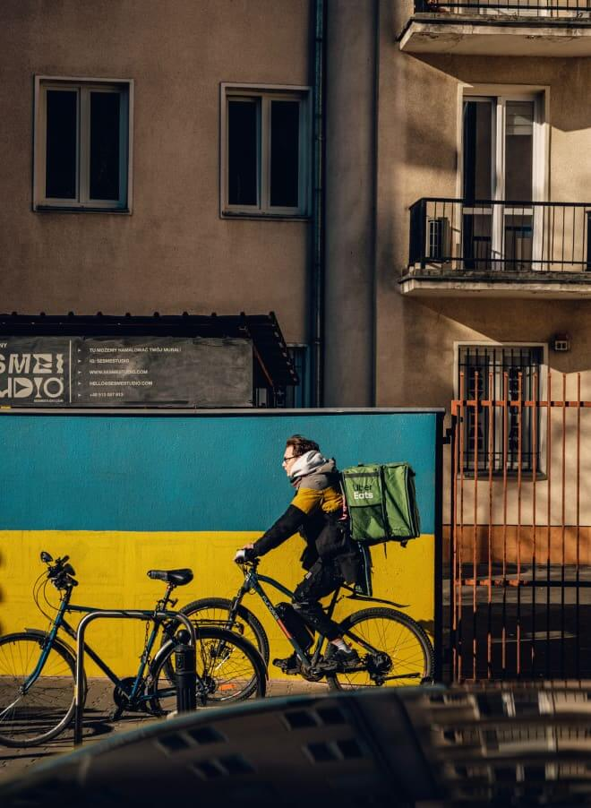

Guerre en Ukraine
Renforcer le soutien au peuple ukrainien

Renforcer le soutien au peuple ukrainien
"La guerre en Ukraine inflige d'immenses souffrances humaines et détruit des communautés. Les équipes du PNUD sont sur le terrain et travaillent en partenariat avec le gouvernement ukrainien pour sauver des vies et soutenir les efforts de secours.
Mais les besoins augmentent rapidement.
Le gouvernement affirme qu'au moins 100 milliards de dollars de bâtiments, routes, ponts, hôpitaux et écoles ont été détruits. La guerre a entraîné la fermeture complète de la moitié des entreprises du pays, tandis que l'autre moitié est en difficulté.
Les premières estimations du PNUD montrent qu'un conflit prolongé ferait sombrer plus de 9 Ukrainiens sur 10 dans la pauvreté ou la quasi-pauvreté, et que les profondes cicatrices sociales et économiques perdureront sur des générations. "
« Parallèlement à une aide humanitaire essentielle, le développement doit être une priorité, même en pleine guerre... Il faut aider le gouvernement ukrainien à répondre à l'urgence et à maintenir les services publics essentiels, aider les familles à trouver un abri et à accéder à des financements, ou réparer les infrastructures vitales, notamment en matière d’énergie, de communications et de transport. Une aide ciblée permettra d'éviter que des millions de personnes ne passent en-dessous du seuil de pauvreté, à un moment où au moins la moitié des entreprises ukrainiennes ont été contraintes de fermer. Nous travaillons avec l'Ukraine pour contribuer à endiguer une catastrophe imminente en termes de développement »– Achim Steiner, Administrateur du PNUD"

Le PNUD soutient le développement en Ukraine depuis 30 ans, et notre engagement envers le peuple ukrainien est absolu. Sur la base de premières évaluations socio-économiques, nous avons lancé un nouveau programme qui se concentre sur le soutien à la réponse d'urgence du gouvernement, à son engagement envers les services publics et au maintien de l'économie.
Notre programme fait appel à l'admirable ingéniosité des Ukrainiens, dont ils ont souvent fait preuve.
Nous travaillons également avec les institutions et la société civile pour maintenir le tissu social, faire respecter les droits humains et assurer l'inclusion, la protection et l'autonomisation de tous."
“In parallel with critical humanitarian support, development must be prioritized even in the midst of war. The Government of Ukraine must be supported to respond to the emergency and sustain essential public services -- from helping families to seek shelter and access lifesaving finance, to repairing vital infrastructure including energy, communications, and transport. Targeted assistance will help prevent millions from falling into poverty at time when at least half of all Ukrainian businesses have been forced to close. We’re working with Ukraine to help to halt a looming development catastrophe.”– Achim Steiner, UNDP Administrator
Il est essentiel de répondre d'abord aux besoins des plus vulnérables. Pour les femmes et les filles, cela signifie également leur donner les moyens de subvenir aux besoins de leur famille par le développement de compétences, le soutien aux entreprises et en leur permettant d'accéder aux réseaux et aux marchés financiers.
La violence sexuelle est un élément prévisible de la brutalité et de l'inhumanité de la guerre, et le PNUD a donné la priorité au soutien des institutions locales et de la société civile. "

Pour répondre aux besoins des plus vulnérables, il faut d'abord leur fournir des compétences professionnelles et d'autres outils pour qu'ils puissent subvenir à leurs besoins. Deux filles se promenant dans un village de la région de Chernihiv, en Ukraine. Avril 2022.
L'action directe du PNUD est rapide et efficace car nous pouvons compter sur des partenariats de longue date avec les réseaux locaux.
Nous avons réaffecté plus de 20 millions de dollars de fonds flexibles existants, conformément aux priorités les plus urgentes définies par le gouvernement ukrainien.
Cela va du suivi des personnes déplacées au développement de nouveaux services numériques, en passant par la création d'emplois pour les plus vulnérables, notamment les femmes et les déplacés.
Ainsi, nous pouvons distribuer de la nourriture et d'autres produits essentiels tels que des médicaments et des kits de premiers secours, et aider le ministère de la Santé à effectuer des tests pour les dizaines de milliers de civils blessés qui ont besoin de transfusions sanguines."
Dans l'est de l'Ukraine, notre partenariat étroit avec le gouvernement du Canada a permis de réaffecter 8 millions de dollars pour répondre aux besoins urgents des personnes fuyant la violence.
Le Japon a contribué à hauteur de 4,5 millions de dollars au travail consistant à retirer des munitions explosives et des débris afin de garantir la mobilité des personnes et l'accès aux biens et services essentiels provenant de l'aide humanitaire.
Grâce au financement de l'Union européenne, de l'Agence suédoise de développement international, des Pays-Bas et du Canada, le PNUD fournit également de la nourriture et du matériel médical dans les abris pour personnes déplacées, ainsi que des équipements pour les services d'urgence et les hôpitaux.
La Suède soutient nos efforts pour offrir des services numériques qui permettent aux réfugiés et aux personnes déplacées de s'inscrire pour trouver un logement. Dans les districts de l'ouest, nous soutenons la police communautaire, et dans l’oblast de Transcarpatie, nous soutenons les patrouilles de police qui maintiennent l'ordre dans les zones d'accueil des personnes déplacées.
Des experts ont été déployés pour travailler sur la gouvernance de crise, la lutte anti-mines, la gestion des débris et les risques environnementaux. "

Alors que les combats font rage, de nombreuses personnes restent isolées et dans l’impossibilité de quitter leur domicile. Dans le même temps, des millions de personnes se mettent en route, ce qui a entraîné le déplacement de population le plus important et le plus rapide depuis la Seconde Guerre mondiale.
Il est essentiel de veiller à ce qu'ils puissent bénéficier d'une aide en ligne où qu'ils se trouvent, sans avoir à se rendre dans des bureaux officiels peut-être détruits, ou sur des zones de conflit dangereuses.
« Personne ne devrait avoir à vivre une telle situation, mais les Ukrainiens ont fait preuve d’une extraordinaire résilience. Le peuple ukrainien doit reprendre le contrôle de sa vie et de ses moyens de subsistance, comme cela a toujours été le cas. Il rebondit et trouve des solutions ; mais nous devons continuer à le soutenir, et la paix doit prévaloir dès que possible ».– Manal Fouani, Représentante résidente intérimaire du PNUD en Ukraine
L'assistance en ligne est devenue essentielle pour les Ukrainiens qui fuient leurs maisons, souvent avec à peine plus que les vêtements qu'ils portent. Les gens fuient la violence, à Boutcha, dans l'oblast de Kiev, en Ukraine, le 4 mars 2022.
Notre longue expérience de travail en situation de crise nous a enseigné que l'action doit découler d’une réflexion approfondie.
En Ukraine, notre travail s'appuie sur une analyse socio-économique. Nous répondons aux besoins immédiats et jetons les bases d’un relèvement en tirant le meilleur parti des ressources propres de l'Ukraine : ses capacités économiques, ses ressources naturelles et son capital humain."
Le prix de la guerre ne se paie pas seulement en morts et en blessés. Il touche toutes les facettes de la société.
Le conflit nous a rappelé que nous sommes tous liés. La plupart des pays du monde en ressentiront les effets, car les Ukrainiens sont contraints de se retirer de la scène économique mondiale et leurs exportations précieuses ne sont à présent plus disponibles.
Les répercussions sur le développement international ont déjà durement frappé et s’inscrivent dans le long terme. À l'avenir, les solutions de développement intégrées devront être au centre de la réponse mondiale à la crise.
Le PNUD soutient le développement en Ukraine depuis trois décennies. Cela ne changera pas. Nous continuerons à travailler avec le pays et son peuple en cette période périlleuse et veilleront à débuter les efforts de redressement et de reconstruction dès que cela est humainement possible."

 
